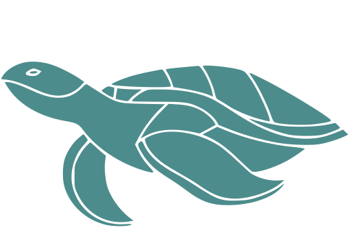

As tartarugas marinhas são animais aquáticos e marinhos, subdivididos em duas famílias:
a Cheloniidae e Dermochelyidae. Nesta, encontramos uma única espécie: a tartaruga de
couro (Dermochelys coriacea), nome este que se refere à presença de tecido semelhante
a couro, ao invés de carapaça coberta por placas. Já na Família Cheloniidae, encontramos
animais com tal escudo protetor, com essas caraterísticas, sendo eles: tartaruga de pente
(Eretmochelys imbricata), aruanã (Chelonia mydas), oliva (Lepidochelys olivacea), cabeçuda
(Caretta caretta), tartaruga-flatback (Natator depressus) e kemps ridley (Lepidochelys kempii).
Todas elas, exceto as duas últimas, são encontradas no Brasil.
Machos e fêmeas são muito semelhantes entre si, podendo ser diferenciados, a olho
nu, somente na fase adulta: momento este em que os machos apresentam rabo e
unhas
bastante desenvolvidos. A maioria destes animais é onívora, embora algumas consumam
unicamente alimentos de origem animal.
Apresentam visão, olfato e audição desenvolvidos, além de uma fantástica capacidade de orientação
e natação. Animais migratórios por excelência, vivem dispersas na imensidão dos mares e, mesmo assim,
quando atingem a maturidade sexual sabem o momento e o local de se reunir para a reprodução.
Nessa época, realizam longas viagens, por vezes transoceânicas, para voltar às praias onde nasceram e desovar.
Save the ocean é uma entidade de direito privado, sem fins lucrativos e co-executora
do PAN - Plano Nacional de Ação para a Conservação das Tartarugas Marinhas no
Brasil do ICMBio/MMA, sendo responsável por grande parte das ações previstas.